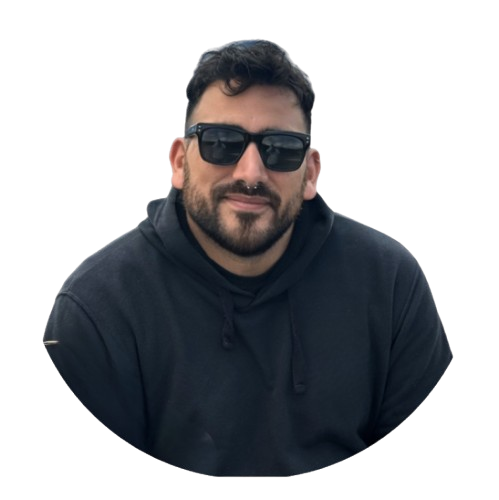

¡Hola! Soy Andrés Cecconi, nací en Buenos Aires y a los 15 años me mudé con mi familia a Rafaela, Santa Fe. Estudié profesorado de Ingles y administración, y durante varios años trabajé en una destilería, lo que me permitió desarrollar habilidades tanto en gestión como en procesos industriales.
Hace dos años decidí mudarme a Buenos Aires para buscar nuevos horizontes y seguir creciendo tanto personal como profesionalmente. La música siempre ha sido una gran parte de mi vida, y disfruto especialmente tocar el bajo. Estoy entusiasmado con esta nueva etapa en la ciudad, explorando oportunidades y compartiendo mi camino con las personas que más quiero.